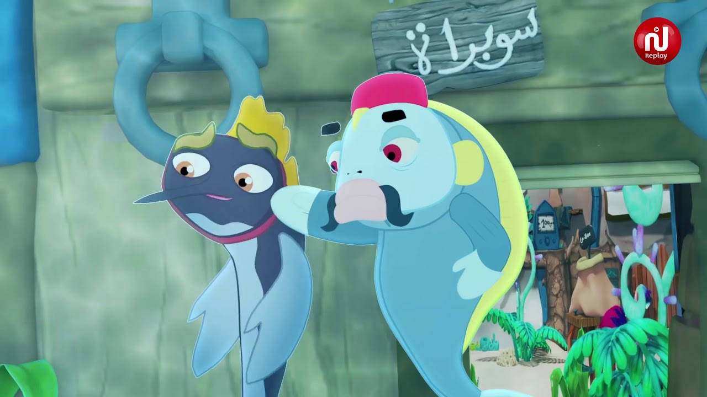

← Portfolio Studio · 2D series · broadcast on Nessma · 2020
ACR Advertising
2D animation on the series Wled El Bhar (Sons of the Sea), broadcast for Ramadan 2020, at ACR Advertising from January to June 2020.
More frames and breakdowns on ArtStation · series listing on IMDb.
Wled El Bhar is a children’s series animated for ACR Advertising. ACR supplied the Moho rigs and characters, and Alaa animated the performances. The series aired on Tunisian television during Ramadan 2020. The assignment covered six sequences of roughly five minutes each, or about 30 minutes of finished character animation, with an average of three characters per sequence. The scenes feature expressive fish characters with hands and facial performances. The work shows how existing character rigs can support clear, readable animation across a sequence. For a new series, share the rig format, shot count, delivery schedule and animation style so the production scope can be planned around the assets already in place. The fish characters use hand gestures and expressive faces to carry their performances across the sequences.

Frequently asked questions
What was Alaa’s role on Wled El Bhar?
Alaa animated the 2D character performances. ACR Advertising supplied the Moho rigs and characters. The work focused on bringing those existing characters to life, with expressive poses and readable facial action across the scenes. His role covered animation performance rather than rig creation.
How much animation was completed?
The assignment covered six sequences of roughly five minutes each, or about 30 minutes of finished character animation. Each sequence featured an average of three characters. The work formed part of Wled El Bhar, the children’s series animated for ACR Advertising.
When and where was the series broadcast?
The ACR animation assignment took place in Tunis from January through June 2020. Wled El Bhar is a children’s series that aired on Tunisian television during Ramadan. The case study focuses on the animation role and broadcast context; it makes no audience-size or ratings claim.